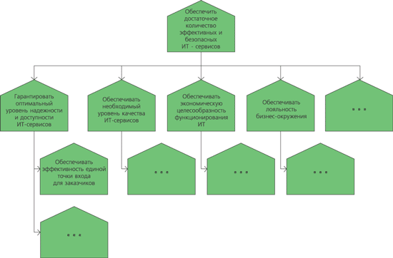
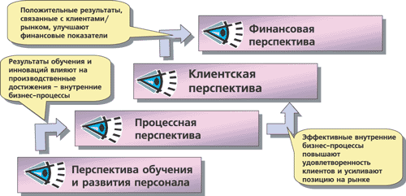
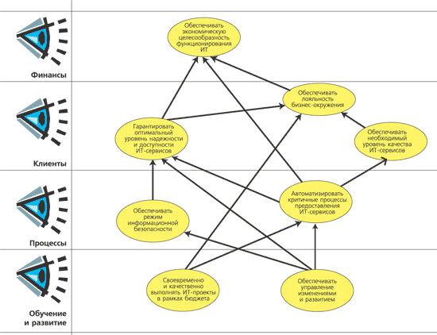
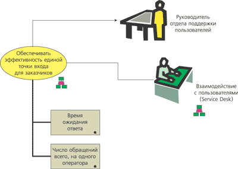
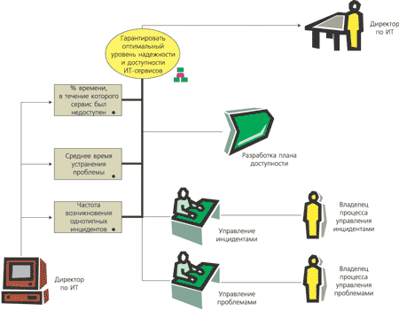
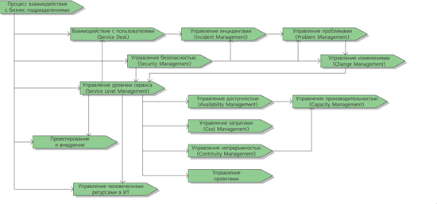
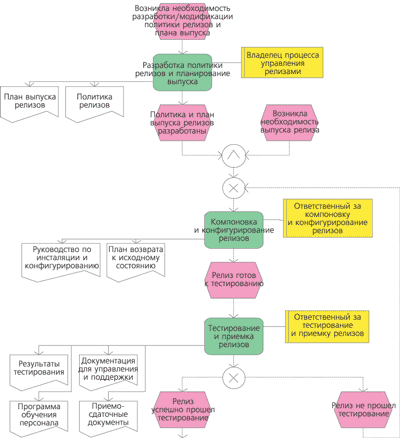
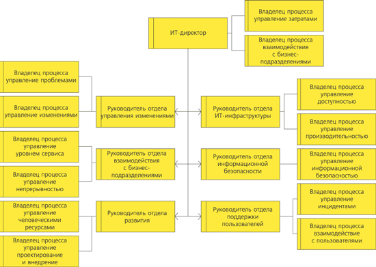
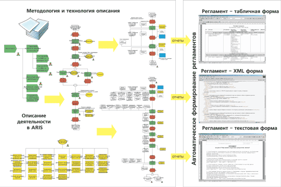

Мария Каменнова, генеральный директор,
Андрей Коптелов, директор по ИТ-консалтингу,
"IDS Scheer/Логика бизнеса"
Многократно доказано, что успешность бизнеса во многом зависит от "правильного" использования ИТ для эффективной поддержки ключевых бизнес-процессов организации. Сегодня ИТ-подразделение становится партнером бизнеса, формирующим добавочное качество, как и основные производственные подразделения организации, тогда как раньше оно только предоставляло в пользование элементы ИТ-инфраструктуры.
С другой стороны, уже нет той веры во всемогущество ИТ, как 10 лет назад, - нет и таких инвестиций. Теперь необходимо четко обосновывать перед бизнесом направления развития ИТ, преимущества выбранных ИТ-решений и сроки возврата инвестиций в них. Бизнес требует от информационных технологий нацеленности на конкретные результаты, поддержки целей бизнеса и увеличения эффективности деятельности. От используемых ИТ и качества их сопровождения зависит деятельность всей компании, и это серьезно повышает требования к эффективности ИТ-подразделения.
Стратегическое управление ИТ-подразделением
Как правило, все целевые установки для ИТ-подразделения должны вытекать из стратегии бизнеса в целом и отражаться в ИТ-стратегии - основополагающем документе по вопросам стратегического управления в области ИТ, который определяет и регламентирует основные направления развития ИТ и расставляет приоритеты проектов. Этот документ должен отвечать на следующие вопросы:
- Каких целей должно достигать ИТ-подразделение?
- Как сбалансировать цели бизнеса и цели в области ИТ?
- Как оценивать степень достижения целей и определять, насколько эффективно работают специалисты?
- По каким параметрам контролировать деятельность ИТ-подразделения?
- Какие процессы наиболее критичны с точки зрения их автоматизации?
- Какие проекты в области ИТ наиболее приоритетны?
В настоящий момент в большинстве компаний ИТ-стратегия сформирована, однако часто это достаточно формальный документ, который не делает ИТ-стратегию реально работающей и не связывает стратегические установки и оперативную деятельность ИТ-подразделения. Чтобы ИТ-стратегия из формального документа превратилась в эффективный инструмент стратегического управления, предлагается использовать технологию Balanced Scorecard - BSC (система сбалансированных показателей, ССП), которая позволяет довести стратегию до всех сотрудников ИТ-подразделения и сделать так, чтобы ее реализация стала ежедневной задачей каждого.
Balanced Scorecard - инструмент стратегического управления, направленный на достижение целей организации через реализацию бизнес-процессов и проектов организации, позволяющий задавать четкие сбалансированные количественные измерители целей, гибко и оперативно вносить корректировки в процесс реализации стратегии.
Преимущество внедрения BSC/ССП состоит в том, что ИТ-подразделение получает некую систему координат для организации действий в соответствии со стратегией и возможность последующего ее мониторинга при помощи ключевых показателей результативности - КПР (Key Performance Indicators, KPI).
При построении единой комплексной системы стратегического управления ИТ-подразделением следует учитывать накопленный опыт в области управления ИТ, творчески применяя его к каждой конкретной ситуации. Данный опыт сосредоточен в Библиотеке передового опыта организации ИТ (IT Infrastructure Library, ITIL).
Формирование целей ИТ-подразделения
На первом этапе реструктуризации необходимо разработать целевые установки для ИТ-подразделения в виде дерева (графа), отражающего детализацию основных целей с разбивкой их на подцели по принципу "что это значит". Достижение всех подцелей означает безусловное достижение самой цели.
Если в организации уже разработана ИТ-стратегия, она становится основой для построения дерева целей ИТ-подразделения (рис. 1). Например, если основная цель формулируется как "Обеспечить достаточное количество эффективных и безопасных ИТ-сервисов", то далее, при построении дерева целей, происходит выделение подцелей этой целевой установки по принципу "что это значит?":
- гарантировать оптимальный уровень надежности и доступности ИТ-сервисов;
- обеспечить необходимый и достаточный режим информационной безопасности;
- обеспечить экономическую целесообразность функционирования ИТ;
- добиться лояльности бизнес-окружения и т. д.
|  |
| Рис. 1. Дерево целей ИТ-подразделения.
|
Дерево целей дает четкое и связанное понимание направлений и логики развития ИТ-подразделения.
Исходя из нашего опыта проектов, суммарное (с учетом декомпозиции) число целей в дереве целей ИТ-подразделения мы оцениваем в диапазоне от 20 до 50, но эта величина сильно зависит от количества сотрудников подразделения и возложенных на него функций. Разработка дерева целей - процесс итерационный, в рамках которого оттачиваются формулировки и приходит понимание направлений развития ИТ в организации.
Для более объективного и качественного стратегического планирования развития ИТ в организации необходимо при формировании целей ИТ-подразделений учитывать цели всей организации. При таком подходе проводится "балансировка" целей в области ИТ и целей бизнеса.
После того как дерево целей разработано и утверждено, необходимо определить и закрепить ответственных за достижение каждой цели. Без данной процедуры дерево целей останется набором лозунгов, которые будет трудно выполнять.
Стратегическая карта ИТ-директора
После того как для каждой цели определены ответственные, можно переходить к разработке стратегических карт. Стратегические карты - это способ представления совокупности целей и причинно-следственных связей между ними.
На стратегической карте цели распределяются по четырем перспективам (рис. 2) - точкам зрения на организацию, которые важны для оценки эффективности бизнеса.
Перспектива "Финансы" показывает ожидания бизнеса от ИТ-подразделения (как деятельность ИТ-подразделения повлияет на финансовое состояние всей организации).
Перспектива "Клиенты" отражает ожидания клиентов ИТ-подразделения (как деятельность ИТ-подразделения должна выглядеть перед его клиентами).
Перспектива "Процессы" формирует требования к внутренним процессам ИТ-подразделения и процессам взаимодействия с другими подразделениями; она определяет стратегическую важность процессов.
Перспектива "Обучение и развитие" показывает, как необходимо развивать персонал и поддерживать способность к совершенствованию ИТ-подразделения, чтобы реализовать ИТ-стратегию.
|  |
| Рис. 2. Перспективы в системе сбалансированных показателей (BSC).
|
Далее определяются причинно-следственные связи между целями, показывающие, как достижение одной цели влияет на достижение других целей (рис. 3).
|  |
| Рис. 3. Стратегическая карта ИТ-директора.
|
Представленный набор перспектив является общепринятым, однако в некоторых случаях можно вводить дополнительную перспективу - "Технологии", которая отражает требования к информационным технологиям.
Для небольших ИТ-подразделений с числом сотрудников до 50 человек достаточно создать стратегическую карту только для руководителя подразделения. Если в подразделении более 50 сотрудников, то, помимо карты руководителя, рекомендуется разработать карты для его ведущих специалистов.
Однако нужно понимать, что стратегическая карта - это инструмент руководителей верхнего уровня и нет необходимости строить стратегические карты для всех сотрудников ИТ-подразделения. Рядовые сотрудники должны быть нацелены на достижение плановых значений ключевых показателей результативности в своих процессах и проектах, которые "выводятся" из ключевых показателей, связанных со стратегическими целями.
Взаимосвязь целей и ключевых показателей результативности
Определения целевых установок и распределения ответственности за достижение целей недостаточно для построения работоспособной системы стратегического управления ИТ-подразделением, поэтому необходимо разработать механизм контроля достижения целей и четко понять, какими показателями оценивается уровень достижения каждой цели.
Как правило, в ИТ-подразделении существует набор собственных количественно измеримых параметров - ключевых показателей результативности; кроме того, большое число ключевых показателей результативности определено в ITIL. Примерами ключевых показателей результативности для ИТ-подразделения могут служить следующие:
- процент инцидентов, разрешенных на первом уровне технической поддержки;
- среднее время восстановления сервиса/услуги после инцидента;
- число обращений на одного оператора службы Service Desk;
- количество успешных изменений и т. д.
Однако при всем обилии КПР, которыми могут измеряться цели, необходимо выбирать ограниченное (два-три) их число, а именно те, которые наиболее полно отражают достижение данной цели (рис. 4). Слишком большое число КПР приведет к неоправданному усложнению системы контроля и повышению трудозатрат для расчета КПР без ощутимого повышения качества системы стратегического управления.
|  |
| Рис. 4. Взаимосвязь целей и КПР.
|
Помимо КПР, необходимо выделить те направления деятельности ИТ-подразделения, от которых зависит достижение целей. Для каждого КПР необходимо определить текущие и целевые значения, а также источники сбора информации и процедуры расчета. Тогда можно говорить о построении полноценного механизма контроля за достижением целей через оценку соответствующих КПР.
Например, достижение цели "Обеспечивать оптимальный уровень надежности и доступности ИТ-сервисов" (рис. 5) можно отслеживать с помощью следующих КПР, источником которых выступает информационная система:
- процент времени, в течение которого сервис был недоступен;
- среднее время устранения проблемы;
- частота возникновения однотипных инцидентов.
|  |
| Рис. 5. Модель окружения цели.
|
Достижение данной цели зависит от выполнения проекта по разработке "Плана доступности" и от эффективности следующих процессов: "Управление инцидентами" и "Управление проблемами".
Следующий этап в построении системы стратегического управления в ИТ-подразделении - корректировка системы мотивирования, т. е. определение механизмов мотивирования для руководителей ИТ-подразделения, которые будут связаны с достижением конкретных целей и КПР. При эффективной системе мотивирования деятельность ИТ-подразделения будет направлена на достижение целей, определенных ИТ-стратегией, что свяжет стратегические установки и оперативную деятельность.
В результате внедрения системы стратегического управления с использованием BSC ИТ-подразделение получает следующие преимущества:
- четкое понимание своих целей;
- распределение ответственности за достижение каждой конкретной цели;
- определение КПР для оценки степени достижения каждой цели;
- определение приоритетов проектов и мероприятий, направленных на достижение целей;
- обоснованное распределение бюджета по проектам в области ИТ;
- получение ранжированного по критичности перечня процессов и проектов;
- определение механизмов мотивирования руководителей ИТ-подразделения для более эффективного достижения целей.
Совершенствование бизнес-процессов ИТ-подразделения
Как известно, деятельность любой организации реализуется через бизнес-процессы и отдельные проекты (программы). Бизнес-процесс - это связанный набор повторяемых действий (функций), которые преобразуют исходный материал и информацию в конечный продукт (результат) в соответствии с предварительно установленными правилами. Проект (программа) - это комплекс работ, направленных на достижение определенных результатов. ИТ-подразделение в данном случае не является исключением, и если область управления ИТ-проектами уже достаточно хорошо известна и описана, то эффективное управление процессами вызывает большой интерес.
Сегодня все большее число российских менеджеров поддерживают идею процессного управления и понимают необходимость его встраивания в традиционные функциональные структуры. Безусловно, способствует этому как желание повысить эффективность операций (к примеру, сократить время разрешения инцидентов), так и необходимость реагировать на требования пользователей, а также стремление к повышению ключевых показателей результативности своей деятельности.
Актуальность вопроса привела к тому, что многие организации осознали необходимость описания и оптимизации бизнес-процессов и стали применять данный подход для выстраивания внутренних "производственных" отношений в компании, что обеспечило четкую структуризацию процедур в формате, удобном для создания регламентной базы и оптимизации. ИТ-подразделение в данном случае не является исключением, поэтому для повышения эффективности его деятельности необходимо оптимизировать внутренние процессы, а иногда провести их реструктуризацию и даже реинжиниринг.
Описание процессов ИТ-подразделения происходит "сверху вниз": сначала определяются процессы верхнего уровня, т. е. деятельность подразделения описывается "крупными мазками", а далее они детализируются до уровня рабочих мест. Пример процессов верхнего уровня ИТ-подразделения приведен на рис. 6. Для выделения процессов верхнего уровня ИТ-подразделения могут использоваться так называемые референтные модели, а именно ITSM HP Reference Model (Hewlett-Packard), Microsoft Operations Framework (Microsoft), IT Process Model (IBM), ARIS ITIL Reference Model (IDS Scheer).
|  |
| Рис. 6. Бизнес-процессы верхнего уровня для ИТ-подразделения.
|
Основываясь на опыте проектов, можно выделить следующие процессы ИТ-подразделения:
- управление ИТ-стратегией;
- бизнес-прогноз и планирование услуг;
- планирование и бюджетирование;
- контроллинг;
- предоставление сервисов;
- поддержка сервисов;
- управление проектами (проектирование и внедрение);
- обеспечение информационной безопасности;
- управление инфраструктурой;
- управление персоналом.
При выделении процессов необходимо верифицировать цели и процессы, добиваясь их согласованности. Для каждой цели необходимы процессы, направленные на ее достижение, и каждый процесс должен быть направлен на достижение определенных целей в дереве целей.
На дальнейших этапах необходимо определить наиболее значимые и ключевые процессы для совершенствования, что можно сделать с помощью методологии BSC.
Опыт наших проектов, связанных с анализом и совершенствованием деятельности ИТ-подразделений, показывает, что наибольшее число проблем сосредоточено в следующих процессах:
- бизнес-прогноз и планирование услуг;
- управление ИТ-стратегией;
- предоставление сервисов (управление уровнем сервиса; управление финансами);
- поддержка сервисов (взаимодействие с пользователями; управление инцидентами; управление проблемами).
Совершенствование данных процессов в первую очередь дает качественный скачок эффективности деятельности ИТ-подразделения, что позволяет получить поддержку руководства для дальнейшего совершенствования.
Недостаточно только выделить процессы, т. е. определить объекты управления в системе процессного управления; необходимо назначить ответственных за каждый процесс - "владельцев процесса". Владелец процесса - лицо (бизнес-роль), несущее полную ответственность за процесс и наделенное полномочиями в отношении этого процесса. Он не касается функций, выполняемых в рамках процесса отдельными подразделениями, ему важна успешная реализация всего процесса, прежде всего его производительность, эффективность и адаптируемость. Владелец процесса несет ответственность за все параметры процесса и должен активно участвовать в его совершенствовании.
При разработке детальных процессов рекомендуется использовать референтные модели в области ИТ, но в то же время нужно четко определять и учитывать требования к процессам в каждой конкретной организации.
В рамках совершенствования для каждого из рассматриваемых процессов определяют следующие параметры:
- цель процесса;
- владелец процесса;
- ключевые показатели результативности процесса;
- потребители результатов процесса;
- поставщики процесса;
- ограничения по времени и ресурсам;
- варианты процесса;
- логика процесса.
Разработка процесса должна происходить с активным участием его владельца. Как правило, описание процесса создается в графической форме, что обеспечивает понятность и формализованность всех компонентов (рис. 7). Детальный процесс можно считать разработанным в том случае, если определены все условия его выполнения, участники (бизнес-роли), функции, документы, информационные системы и т. д. При детальном описании процессов возможен анализ и оптимизация их стоимости с помощью метода Activity-based costing (АВС) на этапе совершенствования.
|  |
| Рис. 7. Детальное описание процесса на примере процесса "Управление релизами".
|
Совершенствование процесса требует обязательной поддержки руководства и активного участия команды совершенствования, в которую обычно включают экспертов по управлению процессами ИТ-подразделения. Особое внимание необходимо уделять обучению участников создаваемых процессов, что упростит процедуру внедрения измененных процессов в регулярную деятельность.
После совершенствования процессов необходимо внести корректировки, иногда очень значительные, в организационную структуру ИТ-подразделения, используя принцип привязки к должностям определенных бизнес-ролей, что часто влечет за собой изменение "Положения об ИТ-подразделении". Примерная организационная структура и перечень ролей приведены на рис. 8.
|  |
| Рис. 8. Пример организационной структуры ИТ-подразделения.
|
В то же время, помимо совершенствования процессов, необходимо регламентировать взаимоотношения между бизнесом и ИТ, что достигается разработкой "Соглашения об уровне услуг" (Service Level Agreement, SLA), которое регламентирует предоставляемые услуги в области ИТ и формализует требования к процессам на этапе их создания.
Для внедрения разработанных процессов необходимо "заставить" подразделение работать по данным процессам, что можно сделать двумя способами: разработать и утвердить регламенты процессов и должностных инструкций либо автоматизировать процессы, заложив при этом регламентацию (по сути, логику выполнения) в информационную систему класса workflow.
Наиболее эффективно использование инструментальных средств, с помощью которых можно автоматизировать получение регламентов на основании графического описания (рис. 9), что уменьшает затраты на регламентацию и позволяет эффективно управлять изменениями. Изначально вся информация вносится в графические модели, после чего все регламентное окружение процесса (регламенты, должностные инструкции, положения о подразделениях и т. д.) формируется автоматически, что обеспечивает актуальность и взаимосвязь регламентов между собой.
|  |
| Рис. 9. Формирование регламентов на основе моделей.
|
При автоматической генерации регламентов инструментальной средой анализируются связи между моделями процессов, организационной структуры, документов, информационных систем, что дает возможность помимо регламентов получать требования к автоматизации процессов и проекты технических заданий на внедрение информационных систем.
Для ИТ-подразделения приемлемы оба способа. Известно, что инвестиции в процесс всегда выгоднее инвестиций в информационную систему, поэтому необходимо воспринимать ИТ-решения как средство автоматизации отлаженных процессов, а не готовое решение, при развертывании которого будут решены все проблемы.
Под термином workflow понимается управление потоком работ и через него - бизнес-процессом. Согласно глоссарию международной организации Workflow Management Coalition (WfMC), workflow - это автоматизация, полная или частичная, бизнес-процесса, при которой документы, информация или задания передаются для выполнения необходимых действий от одного участника к другому в соответствии с набором процедурных правил. Автоматизация предполагает наличие набора правил, которые намного сложнее нарушить (умышленно или случайно), чем регламент или должностную инструкцию.
Некоторые процессы достаточно только регламентировать, поскольку они выполняются редко и автоматизация их не приведет к ожидаемому эффекту. По нашему опыту, наибольший эффект дает автоматизация следующих процессов: управление инцидентами, проблемами и изменениями. Остальные процессы можно регламентировать на первых этапах, а решение об их автоматизации принять позже.
Одно из преимуществ, которые должна обеспечивать автоматизация процессов, - это сбор и анализ ключевых показателей результативности ИТ-подразделения, что позволяет с минимальными трудозатратами наполнять систему BSC реальными данными, позволяющими оценивать достижение стратегических целей.
Вместо заключения
Обобщая вышесказанное и учитывая наш собственный опыт, можно отметить, что совершенствование деятельности ИТ-подразделения с использованием ITIL, BSC и процессно-ориентированного подхода в управлении позволяет решить стратегические вопросы развития ИТ и повысить эффективность регулярной деятельности компании. Это оказывает влияние на развитие бизнеса в целом и обеспечивает быстрый возврат от инвестиций, вложенных в информационные технологии.